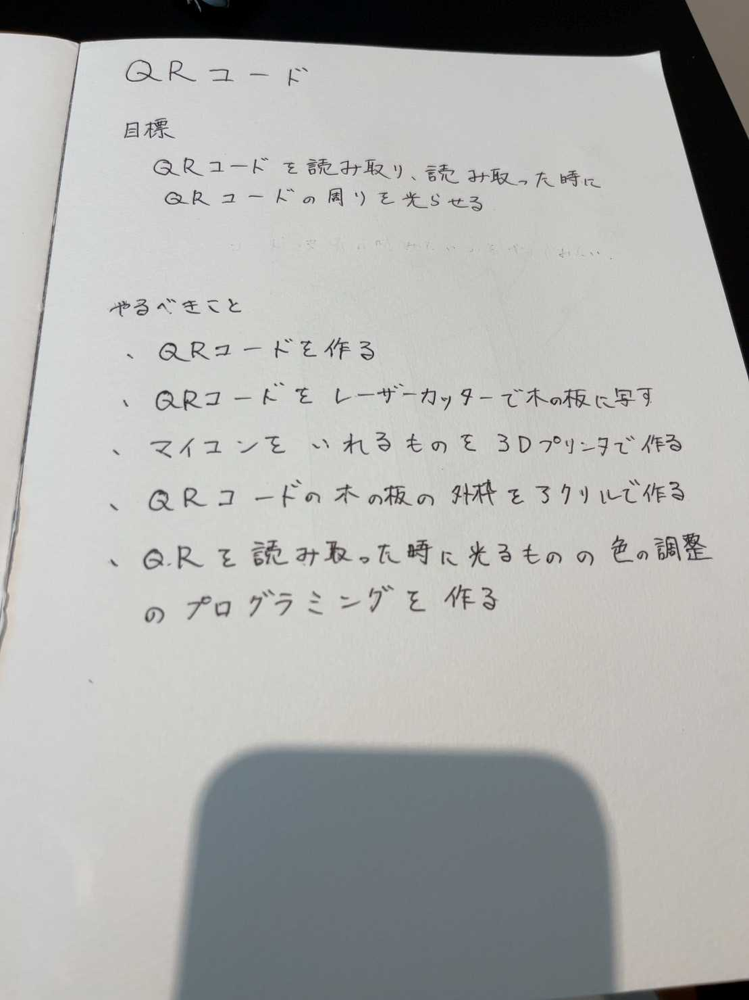
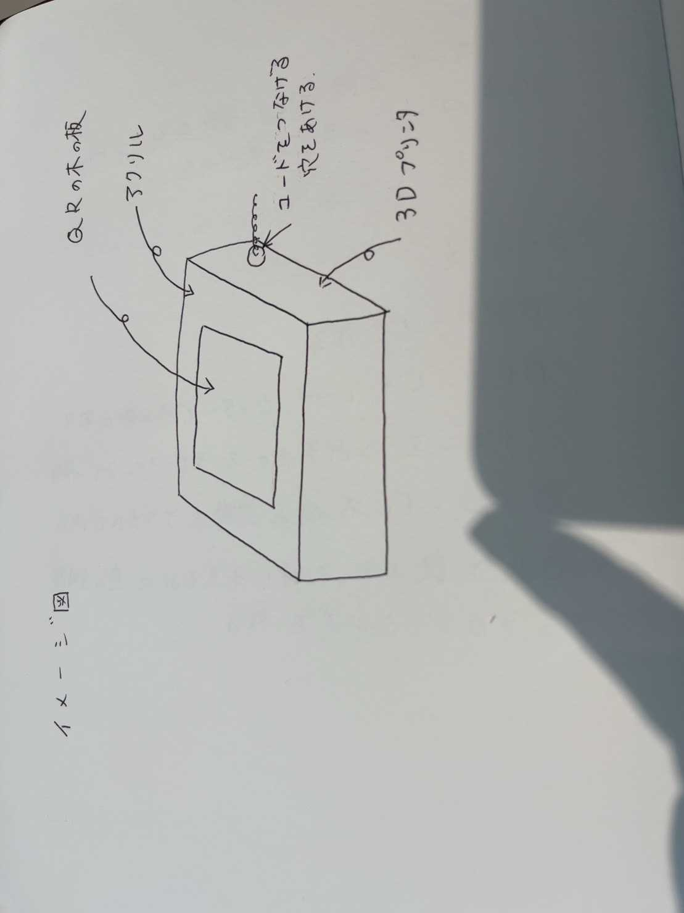
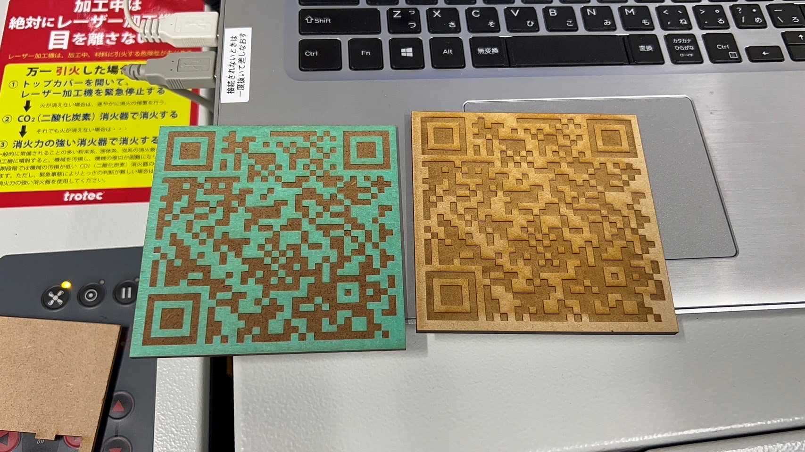

projectnote
1,アイデアスケッチ

2,決めた理由
班で案を出していた時は、このＱＲの意見以外にも掲示板に文字を遠隔で操作できるようにする
音をセンサーで読み取りそれを数字化するといったようなIotサービスのような意見が出ていました
しかし、できないことが多くあることから、これまでの授業でやったことを全部使って
できるものを考え、この意見にいたりました。
3,完成予想イメージ図

4,概要
スマホでＱＲを読み取ると周りのアクリルのところから光るようにする。
イメージとしては、コード決済の時のスマホをかざすようなところみたいにしたい。
5,プロセスメモ
- QRコードを作成する
- QRコードを木の板に写す

6,必要なもの
7,完成品
8,紹介動画
9,班のメンバー
奥谷、田中、新倉、関、小松、宮本